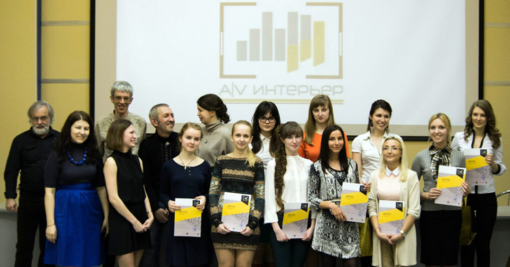
В марте-апреле 2014 года журнал Art Electronics, Санкт-Петербургский Государственный Университет технологии и дизайна и Профком студентов СПГУТД провели межвузовский городской конкурс среди студентов, учащихся факультетов архитектуры и дизайна интерьера. В конкурсе и сопутствующей образовательной программе приняли участие более 130 студентов Санкт-Петербурга из шести ВУЗов: Санкт-Петербургского Университета технологии и дизайна, Государственного Института имени И. Е. Репина, СПГХПА имени А. Л. Штиглица, Санкт-Петербургского архитектурно-строительного колледжа, Высшей Инженерной Школы СПбГПУ, Института телевидения, бизнеса и дизайна.
Задачей, предложенной участникам конкурса, была разработка дизайна интерьера загородного дома для семьи из трех человек. С условием, что в проект включен набор аудио-видео техники - домашний кинотеатр в гостиной, стереосистемы в комнатах членов семьи - и предусмотрено акустическое оформление помещений. Все это, разумеется, должно быть вписано в общий стиль интерьеров дома.
Конкурс AV-Интерьер — это приглашение выйти за пределы только технической функциональности и только дизайна среды обитания. Здесь простое сложение 1+1 не работает, аудиовидеотехника как правило не хочет суммироваться с пространством жизни. Поиск компромисса требует искусства и знаний...
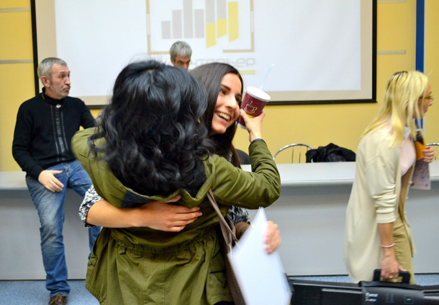
Конкурс завершился 18 апреля. Жюри, в которое входили специалисты из разных областей прикладной эстетики и техники, выбрало 12 лучших работ. В ходе обсуждения награды конкурса были распределены так:
Кроме того, индивидуальный приз за лучшую работу, поданную от Института бизнеса, телевидения и дизайна, получила Виктория Себенкова, студентка 6 курса.
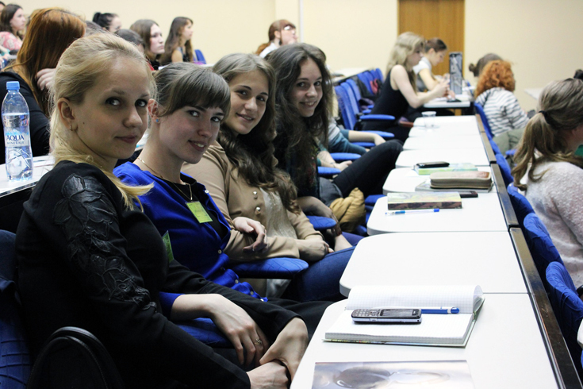
Далее следует краткое описание проектов-победителей.
Итак, задачей конкурса была адаптация жилого пространства к оптимальному качеству воспроизведения звука и изображения в различных помещениях, для различных пользователей и различных целей. Надо заметить, что это задача из круга сверхсложных, она в принципе не решаема идеально, поэтому жюри оценивало возможность внесения постпроектных поправок: если допущенные ошибки невелики и легко исправимы, то можно считать, что их не было. Визуальное решение работ вы можете оценить сами по иллюстрациям.
Начнем с индивидуального приза: лучшую работу от Института бизнеса, телевидения и дизайна выполнила Виктория Себенкова (6-й курс). Она составила психологический портрет воображаемых членов семьи и следовала этому портрету, выполняя конкурсное задание. Совершенно верный путь! (Другие участники конкурса тоже так или иначе ему следовали). Абстракции не могут жить в интерьере, чего-то хотеть, слушать музыку, иметь вкусы... Но дизайнер в данном случае думал о людях, индивидуумах, пусть ему и пришлось их сочинить.
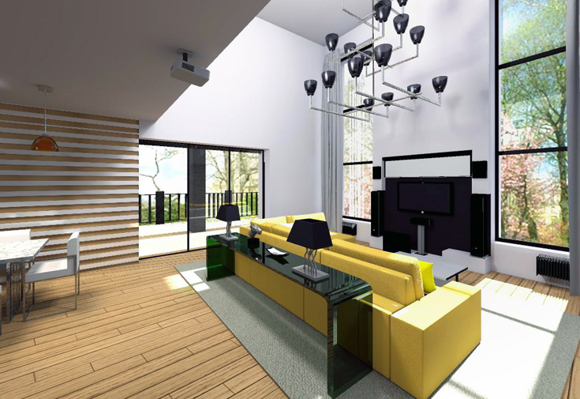
Виктория Себенкова. Дизайн-проект гостиной с акустическими системами GamuT Phi и Atohm Furtive.
В проекте Виктории, в отличие от всех прочих, применено технически самое органичное решение из возможных: сочетание видеопроектора и моторизованного экрана. При убранном экране можно смотреть обычный плоский телевизор - это функционально и практично. Все акустические системы («колонки»), включая тыловые, расположены около экрана, что вряд ли возможно. Эту ошибку можно, однако, исправить.
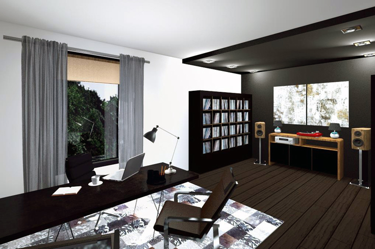
Виктория Себенкова. Дизайн-проект кабинета главы семьи с АС GamuT M'inent M3.
В кабинете разумно разделены рабочая зона и пространство для коллекции грампластинок и стереосистемы. Одно не мешает другому, однако всегда доступна музыка для серьезного вовлеченного прослушивания. Большая коллекция пластинок хранится органично. Деление помещения на взаимодействующие зоны прослеживается и в интерьере спальни. Изъяном в расположении аппаратуры в спальне и кабинете остается лишь то, что слушатель удален от центра между правой и левой АС на большее расстояние, чем эти АС друг от друга.
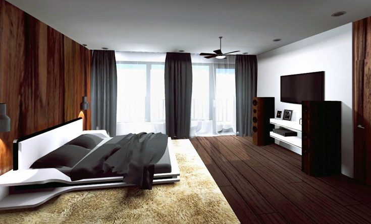
Виктория Себенкова. Дизайн-проект спальни с АС GamuT M'inent M7.
В той же рациональной и эргономичной манере решен и интерьер для юного члена семьи. Настенные АС изящно вписаны в рекреационное пространство.
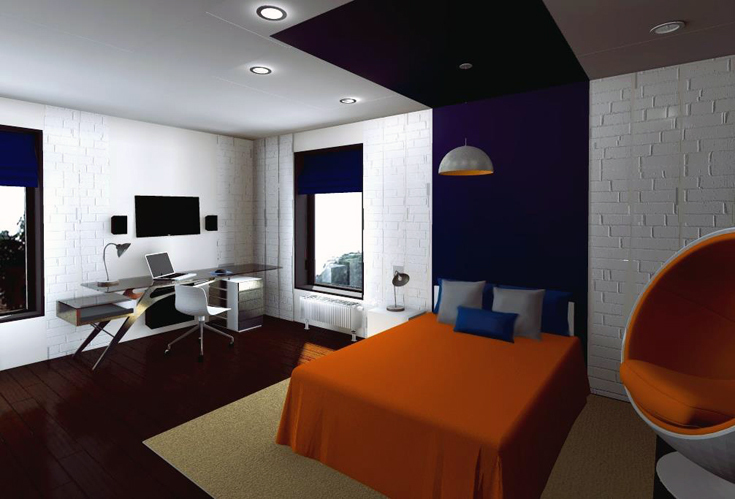
Виктория Себенкова. Дизайн-проект детской с системой фонового озвучивания Atohm Furtive.
Торбен Сондергард (Torben Soendergaard), мой коллега с завода Gamut Audio в Дании и член жюри конкурса «с технической стороны», похвалил эту работу за реализм воплощения интерьера и практический подход к расстановке АС: «Я поставил этой работе высокую оценку за функциональный проект и реалистичную прорисовку. Мне легко представить себе этот проект воплощенным».
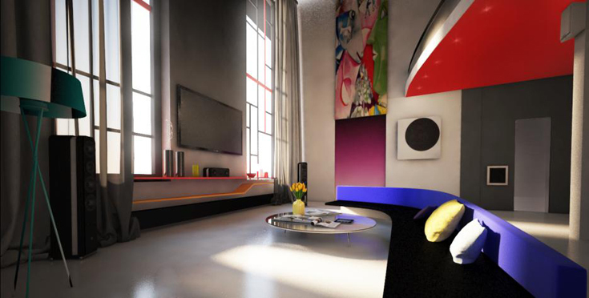
Рубен Мкоян. Дизайн-проект гостиной
Третий приз завоевала безусловно лучшая работа. Почему не первое? Та часть жюри, которая давала эстетические оценки, нашла в проекте Рубена Мкояна, студента 3 курса Института живописи, скульптуры и архитектуры им. И. Е. Репина, ошибки, связанные именно с дизайнерским решением. «Электроакустическая» же часть проекта явно выигрывает у всех остальных.
В домашнем кинотеатре зрителю предложено строго равное расстояние между ним и основными акустическими системами (правой, левой и центральной). ТВ-монитор находится на удобной высоте и на фоне нейтральной по цвету поверхности, что защищает от искажений цветовосприятия. Из приложенных рисунков не совсем понятно, где располагается правая тыловая акустическая система, но, уверен, ей нашлось такое же удачное место, как и левой, которую мы видим высоко под потолком, — это вполне рационально. Правда, слишком низко расположенные АС тыловых каналов могут чрезмерно точно позиционировать звуки, имеющиеся в тыловой полусфере звукоряда фильма, что не всегда комфортно для слушателя.
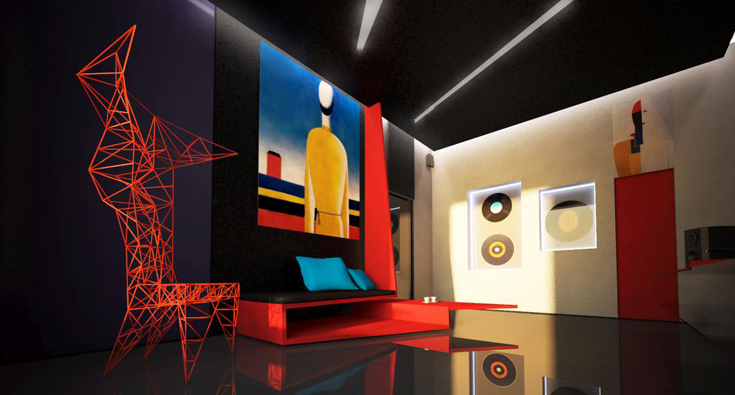
Рубен Мкоян. Дизайн-проект кабинета главы семьи
В кабинете реализована стереосистема для прослушивания виниловых пластинок, в которой место слушателя и акустические системы находятся в вершинах равностороннего треугольника. Такая расстановка, как правило, обеспечивает заметное преимущество по всем аспектам качества звучания. Не совсем ясно, где хранится коллекция пластинок, но можно догадаться, что она убрана с открытой поверхности.
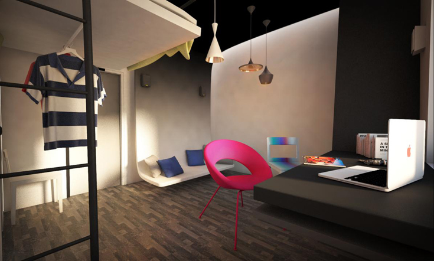
Рубен Мкоян. Дизайн-проект детской
В комнате сына акустические системы находятся на стене: с одной стороны, они незаметны, с другой — способны равномерно озвучивать небольшое помещение, в котором не предъявляется особых требований к точности локализации источников звука, а воспроизводимая музыка чаще используется как фон. Кроме того, при выбранном размещении АС стереоэффект не будет существенно искажаться ни в одном из трех возможных положений слушателя (кресло, диван, кровать).
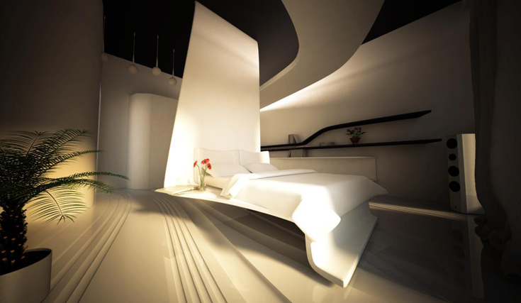
Рубен Мкоян. Дизайн-проект спальни
Рекомендации по «равностороннему» расположению АС и слушателя идеально соблюдены и в спальне. Кроме того, во всех комнатах акустические системы стоят так, что вокруг них нет больших отражающих предметов интерьера и обеспечена равномерная проекция звуковых волн — это залог хорошего качества воспроизведения.
Торбен Сондергард (Gamut Audio, Дания) высоко оценил работу Рубена за оригинальное цветовое решение и правильную расстановку акустических систем во всех помещениях: «Вау! Отличные цвета. Все помещения прекрасно выглядят. Хорошая работа».
Второе место — у Елены Сидориной, студентки 4 курса СПГУТД.
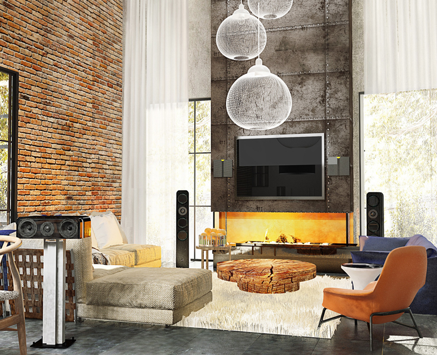
Елена Сидорина. Дизайн-проект гостиной с АС GamuT серии Phi и Atohm Furtive
В гостиной для домашнего кинотеатра создан уютный интерьер с набором зрительских мест «на выбор». Идеальной позиции, в которой создавался бы эффект «окружающего звука», зритель выбрать здесь не сможет, зато в «кинозале» сумеет разместиться большая семья или гости. Акустическая система центрального канала расположена неправильно, но это легко исправить, что же касается тыловых АС, то их, судя по всему, на иллюстрации просто не видно.
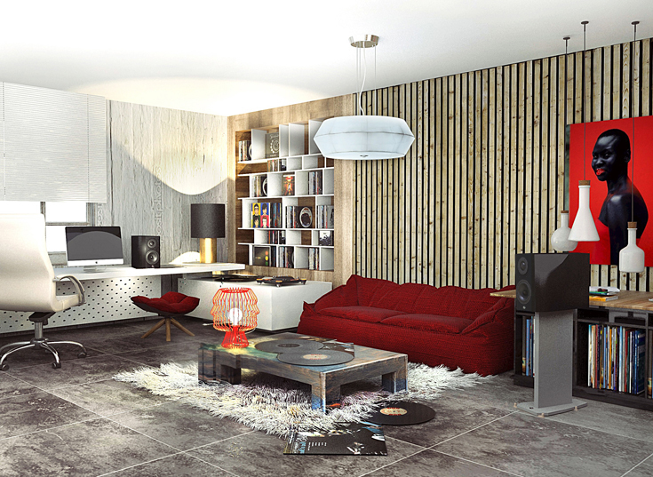
Елена Сидорина. Дизайн-проект кабинета с АС GamuT M'inent M3
Расположение всех АС не совсем ясно и в кабинете, но, очевидно, наш слушатель может пользоваться либо настольными колонками при работе на компьютере, либо АС более высокого класса при прослушивании грампластинок.
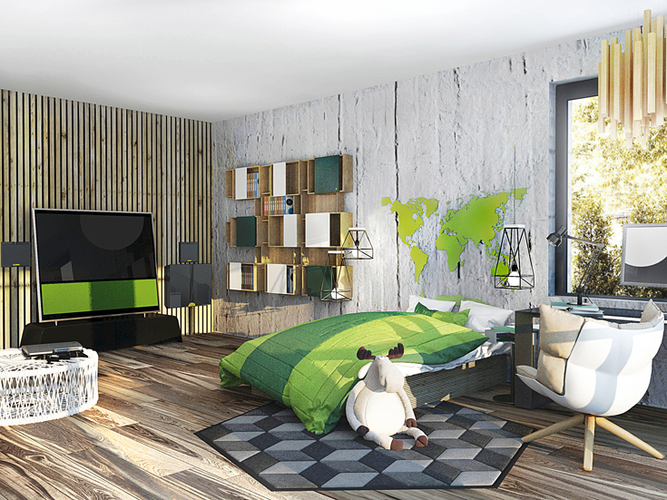
Елена Сидорина. Дизайн-проект детской с АС Atohm Furtive
В детской комнате аудио-видеосистема занимает узкую стену, причем для АС и сабвуфера выбрано настенное расположение. Это решение позволяет одновременно и без труда озвучить все помещение и, при необходимости, сделать звучание более камерным, в одной зоне, подальше от окна и рабочего стола.
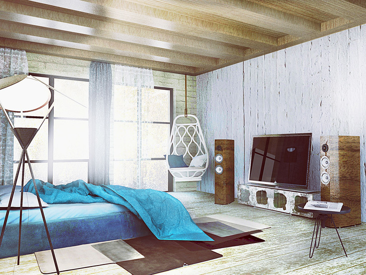
Елена Сидорина. Дизайн-проект спальни с АС GamuT M'inent M5
В спальне предложен классический вариант стереосистемы (левая и правая АС с телевизором посередине на стене), удобный и эффективный для создания качественного звука.
Эта работа тоже очень понравилась нашему коллеге из Дании, который оценил ее (как и проект Рубена Мкояна) наивысшим баллом. Он отметил элегантность и красоту дизайна при правильной расстановке, но, как и я, не мог пройти мимо неверно размещенного громкоговорителя центрального канала в гостиной: «Изысканно. Все комнаты отлично разработаны и умело декорированы. Единственная проблема — центральный канал посреди гостиной».
Наконец, Гран-при в руках Ольги Ядыкиной, студентки 4 курса СПГУТД.
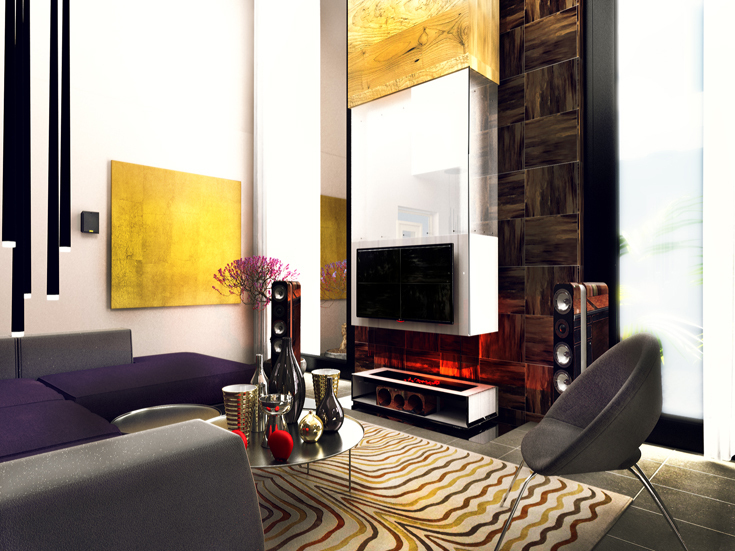
Ольга Ядыкина. Дизайн-проект гостиной
Домашний кинотеатр в гостиной может принять и членов семьи, и гостей, при этом предусмотрено «идеальное» место, в котором «голографический» эффект звука со всех сторон будет наиболее ярок. Проектирование вдумчивое; пусть и имеется ряд мелких ошибок, их легко исправить: громкоговоритель центрального канала лучше поднять чуть выше от пола, телевизор не стоит вешать на светлую поверхность, а тыловые АС, если позволяет обстановка гостиной, хорошо бы сдвинуть на метр глубже.
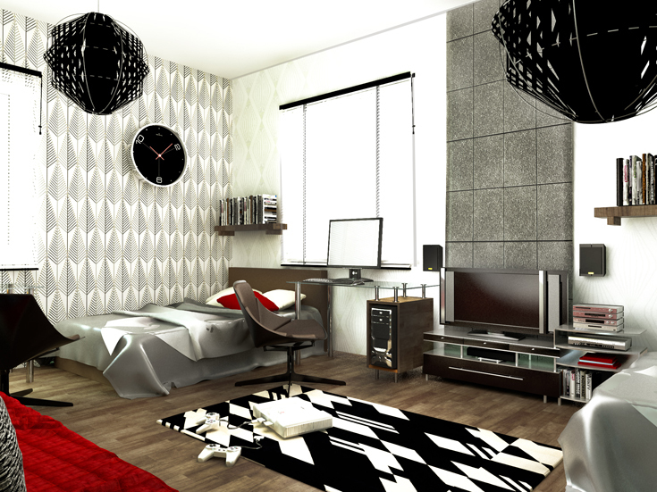
Ольга Ядыкина. Дизайн-проект детской
В детской комнате удачно проработана зона игровых и мультимедийных развлечений, она эргономична и подходит для всех возможных вариантов работы. АС смонтированы на столе.
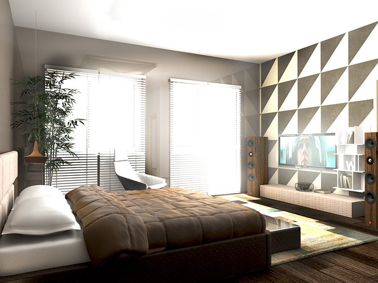
Ольга Ядыкина. Дизайн-проект спальни
В спальне мы видим практичную версию стереосистемы, с нею возможно и фоновое прослушивание, и более сильная вовлеченность в музыку. При этом слушателю доступна оптимальная с точки зрения стереоэффекта позиция. Геометрический рисунок на стене за телевизором, правда, будет искажать восприятие видеоряда, но здесь телевизор, вероятно, нужен прежде всего как источник информации.
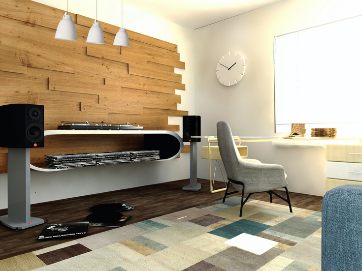
Ольга Ядыкина. Дизайн-проект кабинета
В кабинете имеется эргономичная зона прослушивания для аудиосистемы с проигрывателем грампластинок и АС на подставках. Грампластинки я бы рекомендовал хранить не горизонтально, а вертикально. Акустические системы не стоят вплотную к стене, что крайне позитивно сказывается на объемности звучания и локализации источников звука в стереопанораме.
Мой датский коллега указал на некоторую скученность аудио-видеоаппаратуры, зато удачное размещение АС похвалил: «Тесновато, но проект хороший».
Один из итогов конкурса AV-Интерьер 2014 — резкое расширение круга участников. Желаем им новых творческих побед!